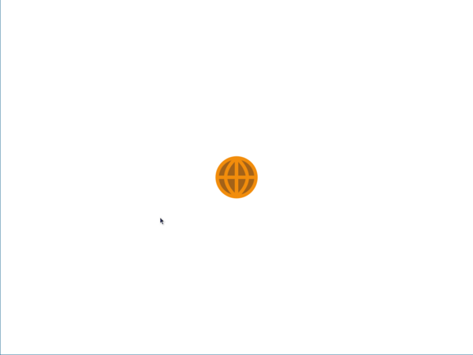
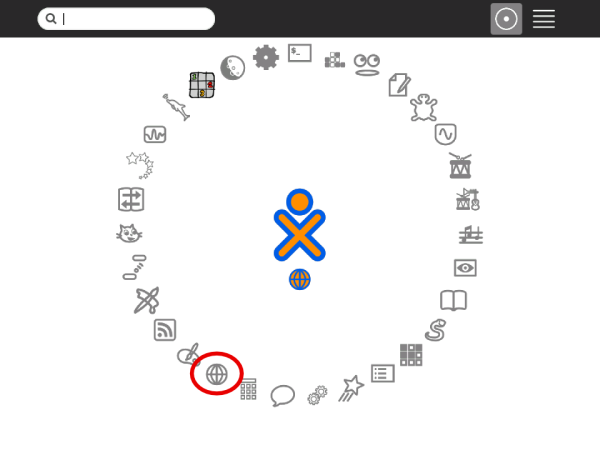
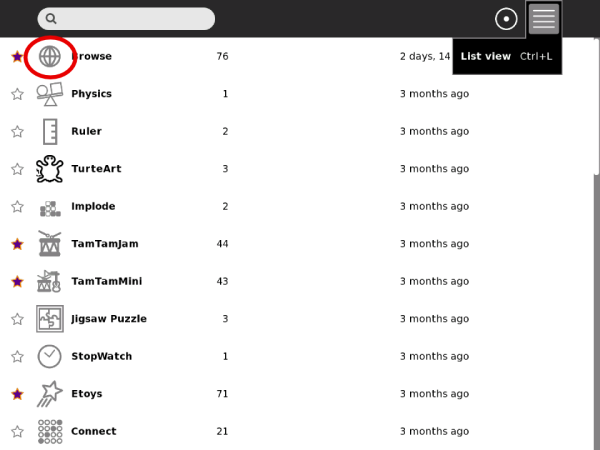
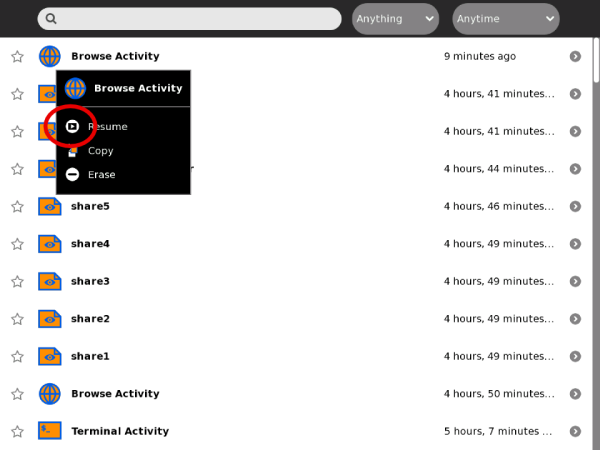
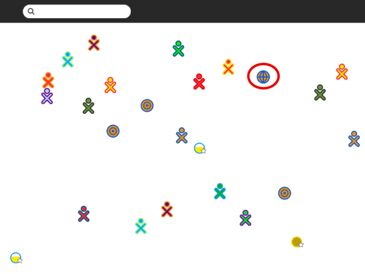

| Qu'est-ce que Sugar ? | Index | Collaborer |
Vous pouvez lancer une Activité de quatre manières différentes:
Lorsque vous lancez une Activité, son icône clignote au milieu de l'écran tandis que l'Activité se charge.


Cliquez sur l'icône ou sur une option via le menu déroulant.

Cliquez sur l'icône ou sur une option via le menu déroulant.

Cliquez sur l'icône ou sur reprendre via le menu déroulant.

Cliquez sur l'icône ou sur une option via le menu déroulant.
Cliquez Rejoindre dans le menu déroulant du Cadre.
| Qu'est-ce que Sugar ? | Index | Collaborer |